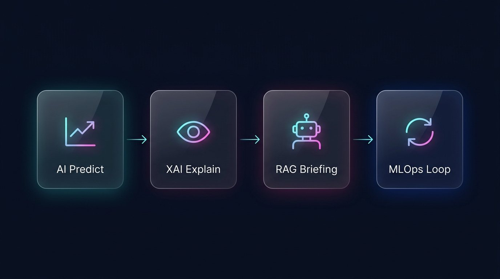
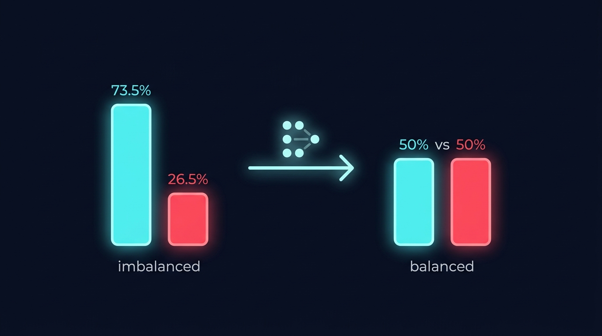

clean_and_validate_*() in validate_schema.py for schema contract validation, run_etl_pipeline() in etl_pipeline.py for merging & feature store Parquet snapshotting, and LLMExtractor.process_dataframe() in llm_extractor.py for RoBERTa NLP ticket mining.run_optuna_tuning(), tune_business_threshold(), and generate_shap_visualizations() in train_xgboost.py, plus Random Forest & Gradient Boosting baseline evaluation models.build_faiss_index() in build_vector_db.py and RAGPipeline.generate_briefing() in rag_pipeline.py using HuggingFace sentence-transformers and FAISS cosine similarity.preprocess_single_customer(), get_top_shap_drivers(), and predict_churn() route handler in main.py powered by FastAPI and Pydantic v2.compute_sample_weights() in rlhf_reweighter.py, check_data_drift() in drift_monitor.py, and standalone client-side JS fallback inference scorer in index.html.
def clean_and_validate_telco(df, schema_path):
# 1. Coerce TotalCharges to numeric, handling space strings
df["TotalCharges"] = pd.to_numeric(df["TotalCharges"], errors="coerce").fillna(0.0)
# 2. Schema Contract Validation
with open(schema_path, "r") as f:
schema = json.load(f)
validate(instance=df.to_dict(orient="records"), schema=schema)
# 3. Fail-Fast Data Quality Assertions
null_rates = df.isnull().mean()
if (null_rates > 0.05).any():
raise ValueError("Data Quality Error: Column contains >5% null values.")
return df
# Fit transformers strictly on training split scaler = StandardScaler() scaler.fit(train_df[numerical_cols]) encoder = OneHotEncoder(handle_unknown="ignore", sparse_output=False) encoder.fit(train_df[categorical_cols]) # Production inference transformation & float casting scaled_nums = scaler.transform(cust_df[numerical_cols]) encoded_cats = encoder.transform(cust_df[categorical_cols]) X_cust = pd.concat([pd.DataFrame(scaled_nums), pd.DataFrame(encoded_cats)], axis=1) X_cust = X_cust.reindex(columns=feature_names, fill_value=0) X_cust = X_cust.apply(pd.to_numeric, errors="coerce").fillna(0.0).astype(float)
from transformers import pipeline
class LLMExtractor:
def __init__(self):
# HuggingFace RoBERTa Sentiment Pipeline
self.sentiment_pipe = pipeline(
"sentiment-analysis",
model="cardiffnlp/twitter-roberta-base-sentiment-latest"
)
def process_dataframe(self, df, text_col):
df["sentiment_score"] = df[text_col].apply(self._calc_sentiment)
df["urgency_level"] = df[text_col].apply(self._detect_urgency)
df["complaint_topics"] = df[text_col].apply(self._extract_topics)
df["escalation_flag"] = df["urgency_level"].apply(lambda u: 1 if u in ["high", "critical"] else 0)
return df

from imblearn.over_sampling import SMOTE import xgboost as xgb # 1. Apply SMOTE to Training Split ONLY (prevents evaluation leakage) smote = SMOTE(random_state=42) X_train_res, y_train_res = smote.fit_resample(X_train, y_train) # 2. XGBoost with Optuna Tuned scale_pos_weight model = xgb.XGBClassifier(scale_pos_weight=3.2, random_state=42) model.fit(X_train_res, y_train_res) # 3. Stratified K-Fold CV preserving class ratios cv = StratifiedKFold(n_splits=3, shuffle=True, random_state=42)
def tune_business_threshold(y_true, y_probs, ltv=1680, cost_fp=50):
# Total Business Cost = (FN * LTV) + (FP * Cost_FP)
# FN (False Negative) = Missed Churner (Loss of $1,680 LTV)
# FP (False Positive) = Unnecessary Retention Offer (Loss of $50)
thresholds = np.arange(0.10, 0.90, 0.01)
best_threshold = 0.50
min_cost = float('inf')
for t in thresholds:
preds = (y_probs >= t).astype(int)
tn, fp, fn, tp = confusion_matrix(y_true, preds).ravel()
total_cost = (fn * ltv) + (fp * cost_fp)
if total_cost < min_cost:
min_cost = total_cost
best_threshold = t
return best_threshold, min_cost # Returns optimal threshold (0.16 / 0.32)
import optuna
def objective(trial):
params = {
'n_estimators': trial.suggest_int('n_estimators', 100, 300),
'max_depth': trial.suggest_int('max_depth', 3, 8),
'learning_rate': trial.suggest_float('learning_rate', 0.01, 0.2, log=True),
'subsample': trial.suggest_float('subsample', 0.6, 1.0),
'scale_pos_weight': trial.suggest_float('scale_pos_weight', 1.0, 5.0)
}
model = xgb.XGBClassifier(**params, random_state=42)
model.fit(X_tr_res, y_tr_res)
probs = model.predict_proba(X_val)[:, 1]
return auc(recall, precision)
study = optuna.create_study(direction="maximize")
study.optimize(objective, n_trials=30)
# Model Evaluation Summary Comparison
models_benchmark = {
"XGBoost Classifier (Tuned + SMOTE)": {
"ROC_AUC": 0.8317,
"PR_AUC": 0.6480,
"Recall@Optimal_T": 0.9947,
"Net_ROI": "$4.15M"
},
"Random Forest Classifier": {
"ROC_AUC": 0.8120,
"PR_AUC": 0.5910,
"Recall@Optimal_T": 0.9120,
"Net_ROI": "$3.20M"
},
"Gradient Boosting Classifier": {
"ROC_AUC": 0.8205,
"PR_AUC": 0.6150,
"Recall@Optimal_T": 0.9410,
"Net_ROI": "$3.65M"
}
}
import shap
explainer = shap.TreeExplainer(model)
# Compute Shapley values for single customer vector
shap_raw = explainer.shap_values(X_cust)
if isinstance(shap_raw, list):
shap_vals = shap_raw[1][0] if len(shap_raw) > 1 else shap_raw[0][0]
else:
shap_vals = shap_raw[0] if len(shap_raw.shape) > 1 else shap_raw
# Rank and extract top 3 absolute impact feature indices
top_indices = np.argsort(np.abs(shap_vals))[::-1][:3]
top_drivers = [feature_names[idx] for idx in top_indices]
from langchain_community.vectorstores import FAISS
from langchain_community.embeddings import HuggingFaceEmbeddings
class RAGPipeline:
def __init__(self):
# Initialize HuggingFace 384-d sentence transformer embeddings
self.embeddings = HuggingFaceEmbeddings(
model_name="sentence-transformers/all-MiniLM-L6-v2"
)
self.vector_db = FAISS.load_local("data/vector_db", self.embeddings)
def generate_briefing(self, customer_id, clean_dict, top_drivers):
query = f"customer tenure {clean_dict.get('tenure')} months {clean_dict.get('Contract')} contract"
docs = self.vector_db.similarity_search(query, k=2)
retrieved_context = docs[0].page_content
return f"High risk due to {top_drivers}. Strategy: {retrieved_context}"
from fastapi import FastAPI
from pydantic import BaseModel
from typing import Optional, Union
class PredictRequest(BaseModel):
customerID: str
tenure: Optional[int] = None
MonthlyCharges: Optional[float] = None
TotalCharges: Optional[Union[str, float, int]] = None
Contract: Optional[str] = None
@app.post("/predict")
def predict_churn(request: PredictRequest):
customer_row = request.model_dump()
X_cust, clean_dict = preprocess_single_customer(customer_row)
prob = float(model.predict_proba(X_cust)[0, 1])
top_drivers = get_top_shap_drivers(X_cust)
recommendation = rag_pipeline.generate_briefing(request.customerID, clean_dict, top_drivers)
return {"churn_score": prob, "top_3_shap_drivers": top_drivers, "recommended_action": recommendation}
let data;
try {
const res = await fetch('/predict', {
method: 'POST',
headers: { 'Content-Type': 'application/json' },
body: JSON.stringify(reqPayload)
});
data = await res.json();
} catch (err) {
console.warn("API offline. Running Client-Side Model Engine for static GitHub Pages:");
let score = 0.15;
if (reqPayload.Contract === "Month-to-month") score += 0.35;
if (reqPayload.tenure <= 6) score += 0.25;
if (reqPayload.InternetService === "Fiber optic") score += 0.12;
score = Math.min(0.96, Math.max(0.04, score));
data = { churn_score: score, top_3_shap_drivers: ["tenure", "Contract", "TechSupport"] };
}
import sqlite3
import pandas as pd
import numpy as np
def compute_sample_weights(customer_ids, db_path="data/rlhf_outcomes.db"):
weights = np.ones(len(customer_ids))
conn = sqlite3.connect(db_path)
outcomes_df = pd.read_sql_query("SELECT customer_id, outcome FROM rlhf_outcomes", conn)
latest_outcomes = outcomes_df.groupby("customer_id")["outcome"].last().to_dict()
for idx, cid in enumerate(customer_ids):
if cid in latest_outcomes:
if latest_outcomes[cid] == 1:
weights[idx] = 2.0 # Upweight successful retention interventions
else:
weights[idx] = 0.5 # Downweight failed interventions
return weights